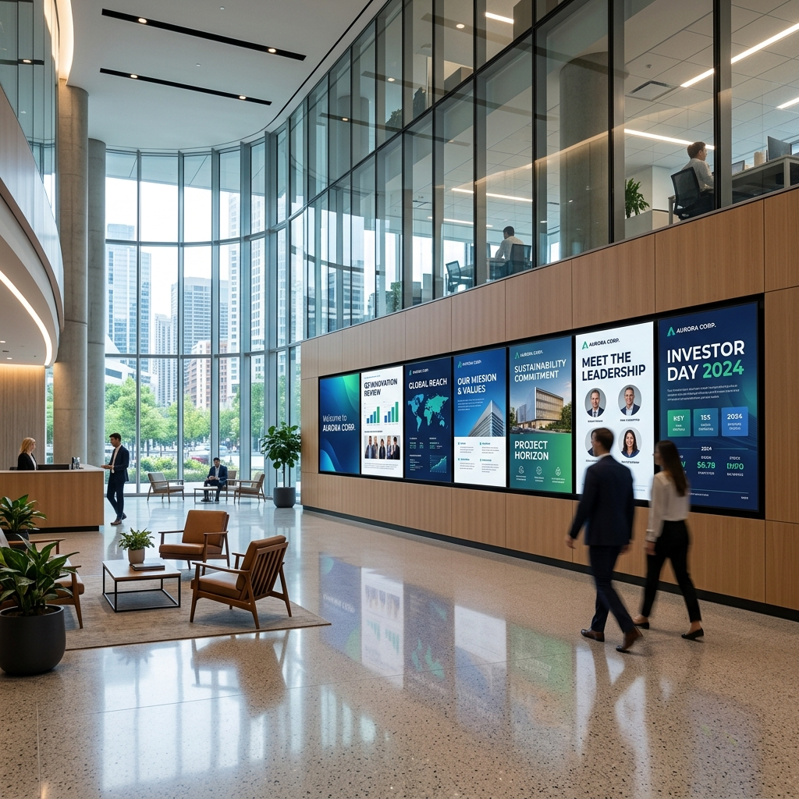

Pourquoi l'affichage dynamique est indispensable pour les entreprises marocaines ?
Au Maroc, l'affichage dynamique connaît une croissance fulgurante. Les écrans LED et LCD remplacent progressivement les affiches statiques, offrant une flexibilité et un impact visuel inégalés. Que vous soyez dans le retail, la restauration ou les services, cette technologie vous permet de capter l'attention de vos clients en temps réel.

Les avantages clés pour votre business
- Mise à jour instantanée : Modifiez vos messages en quelques clics, sans frais d'impression.
- Engagement accru : Les contenus animés augmentent le taux de mémorisation de 30%.
- Ciblage contextuel : Diffusez des offres selon l'heure, la météo ou l'affluence.

Comment intégrer l'affichage dynamique dans votre stratégie marketing ?
Pour maximiser votre ROI, suivez ces étapes : définissez vos objectifs (notoriété, ventes, information), choisissez l'emplacement stratégique de vos écrans, et créez un contenu adapté à votre audience. Au Maroc, les secteurs du retail et de l'hôtellerie sont particulièrement friands de cette technologie.
Want to implement these strategies effortlessly? Our DatRey experts handle it for you.

Tendances 2024 à ne pas manquer
- Intégration de l'IA pour personnaliser les messages.
- Écrans interactifs avec QR codes et NFC.
- Solutions cloud pour une gestion à distance simplifiée.

Conclusion
L'affichage dynamique est un levier puissant pour les entreprises marocaines souhaitant se démarquer. Avec DatRey, bénéficiez d'une solution clé en main adaptée à votre budget. Contactez-nous pour un audit gratuit de votre espace !